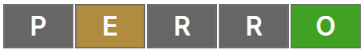

×Cómo jugar
Tienes seis intentos para adivinar la palabra escondida.
La palabra escondida es de 5 letras.
Escribe la palabra y presiona ENTER.
Ejemplo: La palabra a descubrir es "CHELO" y escribimos "PERRO"

O
'O' se encuentra en la palabra en la posición correcta.
E
'E' se encuentra en la palabra en la posición incorrecta.
P
'P' no se encuentra en la palabra.
Si descubres la palabra escondida podrás avanzar al siguiente nivel.
Cada nuevo nivel aumenta la dificultad (menos intentos).
La palabra secreta no puede repetirse entre los niveles.